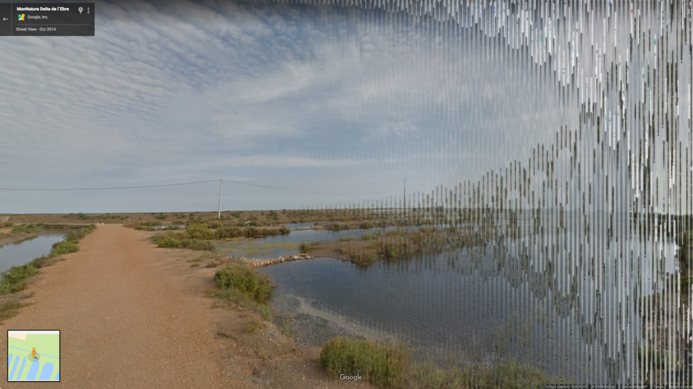
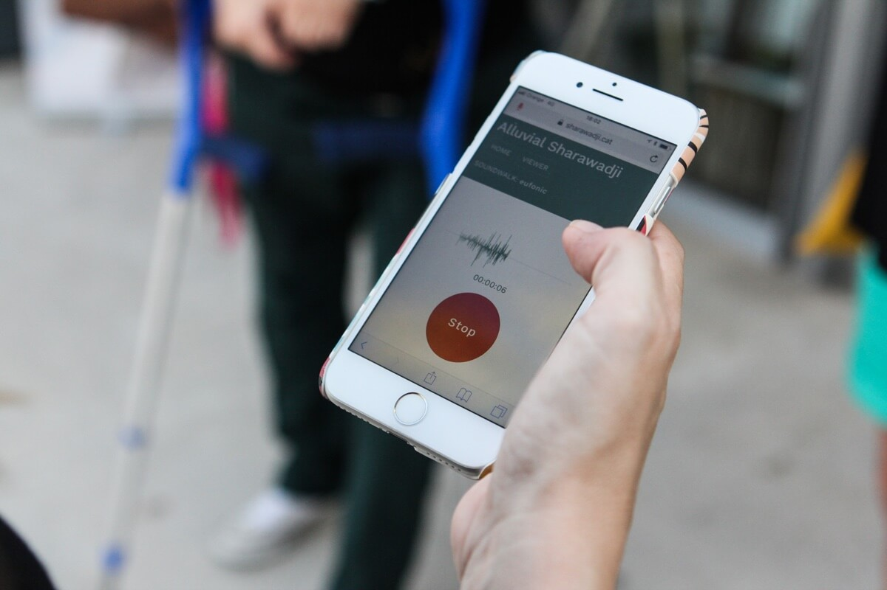
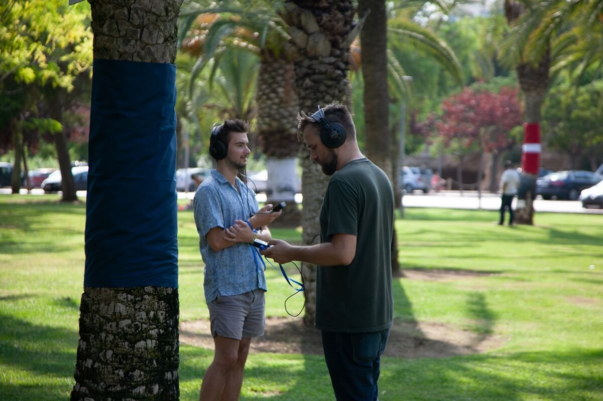
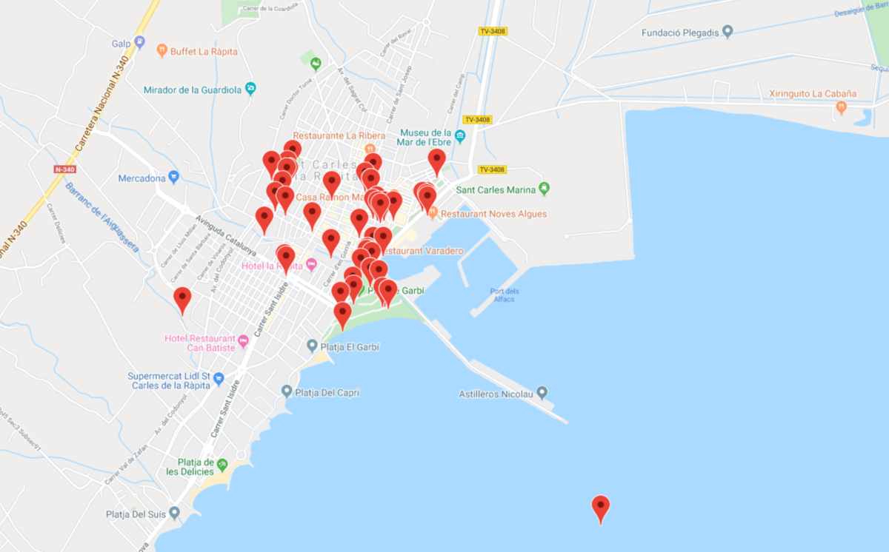

Alluvial Sharawadji
“Alluvial Sharawadji” is a crowdsourced interactive artwork/workshop by Tim Cowlishaw and Jakub Fiala for Eufónic festival 2018 combining collaborative field recording with low-cost, ubiquitous web technologies to communicate the experience of a local sound environment to audiences who are distant in both time and space.
When we were invited to devise a workshop for Eufónic 2018, we came across the idea to use Google Street View as a creative medium. Street View is a great example of controversial, pervasive technology that also offers great creative possibilities, but is very restricted by its profitability. Recently Google Maps changed their pricing structure, forcing a lot of its users to shut down/redevelop their applications. In Germany, lawsuits by ordinary people forced Google to give up on mapping the country. Google has dabbled in soundscaping Street View before - in a static, pre-composed manner. We saw this as an opportunity to create a more open, participatory experience for the Eufonic audience. But also exploit Street View’s permanence to create a memory of a particular fleeting moment, without compromising on privacy. The disjointedness of time, image and sound preserves the anonymity of the experience.
We used the metaphor of the Ebre delta as a geographical memory bank. Layers of sediments are brought by the river, making the delta a record of past centuries, each grain of soil having travelled from inland river banks, only to be deposited at a given time and place. We wanted to allow people to deposit such grains of sound around the virtual town, in a sort of alluvial document of the festival.
The artwork consists of two web applications - a recorder which lets festival goers record and save sounds at the place where they recorded them. We use geo-location and the Web Audio API, so the app doesn’t have to be downloaded or installed. And a viewer, which lets anyone on the Internet walk around Sant Carles in Street View, and hear the nearby recorded sounds, spatially mapped so they originate from the right direction. The image on screen is disjointed from the sound - one might be walking down an empty street but hear crowds and music. This mismatch gives the experience a particularly ghostly quality.
We launched the piece with a workshop on the first day of the festival. We gave the instructions to a few groups of participants, who could either go on a walk recording sounds during the workshop and come back to share their impressions, or add recordings throughout the festival. We also set up a “game station” of sorts, where visitors could walk around the town in Street View using an Xbox controller, and hear the soundscape as it’s being created. At the end of the festival, we’d amassed a sonic document of the town of Sant Carles during the festival, which draws attention to how the sonic atmosphere of the town is changed by it, by contrasting the Street View images (in which the festival isn’t visible) with our audio (where it is audible).